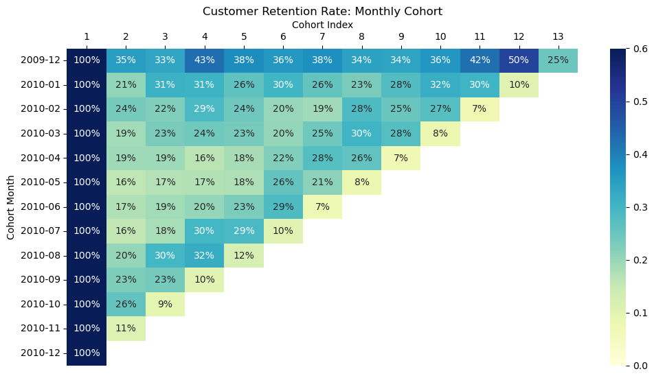

# Standard Data Package
import pandas as pd
import numpy as np
import matplotlib.pyplot as plt
import seaborn as sns
# Datetime Package
from datetime import datetime
# Serialization Package
import joblibdata = joblib.load("../data/processed/cleaned_data.pkl")# Data Preview
data.head()| Invoice | StockCode | Description | Quantity | InvoiceDate | Price | Customer ID | Country | Total_Price | |
|---|---|---|---|---|---|---|---|---|---|
| 0 | 489434 | 85048 | 15CM CHRISTMAS GLASS BALL 20 LIGHTS | 12 | 2009-12-01 07:45:00 | 6.95 | 13085 | United Kingdom | 83.4 |
| 1 | 489434 | 79323P | PINK CHERRY LIGHTS | 12 | 2009-12-01 07:45:00 | 6.75 | 13085 | United Kingdom | 81.0 |
| 2 | 489434 | 79323W | WHITE CHERRY LIGHTS | 12 | 2009-12-01 07:45:00 | 6.75 | 13085 | United Kingdom | 81.0 |
| 3 | 489434 | 22041 | RECORD FRAME 7" SINGLE SIZE | 48 | 2009-12-01 07:45:00 | 2.10 | 13085 | United Kingdom | 100.8 |
| 4 | 489434 | 21232 | STRAWBERRY CERAMIC TRINKET BOX | 24 | 2009-12-01 07:45:00 | 1.25 | 13085 | United Kingdom | 30.0 |
# Extracting Month from InvoiceDate
data['Month'] = data['InvoiceDate'].apply(lambda x: datetime(x.year, x.month, 1))
# Validation
data.head()| Invoice | StockCode | Description | Quantity | InvoiceDate | Price | Customer ID | Country | Total_Price | Month | |
|---|---|---|---|---|---|---|---|---|---|---|
| 0 | 489434 | 85048 | 15CM CHRISTMAS GLASS BALL 20 LIGHTS | 12 | 2009-12-01 07:45:00 | 6.95 | 13085 | United Kingdom | 83.4 | 2009-12-01 |
| 1 | 489434 | 79323P | PINK CHERRY LIGHTS | 12 | 2009-12-01 07:45:00 | 6.75 | 13085 | United Kingdom | 81.0 | 2009-12-01 |
| 2 | 489434 | 79323W | WHITE CHERRY LIGHTS | 12 | 2009-12-01 07:45:00 | 6.75 | 13085 | United Kingdom | 81.0 | 2009-12-01 |
| 3 | 489434 | 22041 | RECORD FRAME 7" SINGLE SIZE | 48 | 2009-12-01 07:45:00 | 2.10 | 13085 | United Kingdom | 100.8 | 2009-12-01 |
| 4 | 489434 | 21232 | STRAWBERRY CERAMIC TRINKET BOX | 24 | 2009-12-01 07:45:00 | 1.25 | 13085 | United Kingdom | 30.0 | 2009-12-01 |
# Create and Extract each customer Cohortmonth
data['CohortMonth'] = data.groupby(by='Customer ID')['Month'].transform('min')
# Validation
data.head()| Invoice | StockCode | Description | Quantity | InvoiceDate | Price | Customer ID | Country | Total_Price | Month | CohortMonth | |
|---|---|---|---|---|---|---|---|---|---|---|---|
| 0 | 489434 | 85048 | 15CM CHRISTMAS GLASS BALL 20 LIGHTS | 12 | 2009-12-01 07:45:00 | 6.95 | 13085 | United Kingdom | 83.4 | 2009-12-01 | 2009-12-01 |
| 1 | 489434 | 79323P | PINK CHERRY LIGHTS | 12 | 2009-12-01 07:45:00 | 6.75 | 13085 | United Kingdom | 81.0 | 2009-12-01 | 2009-12-01 |
| 2 | 489434 | 79323W | WHITE CHERRY LIGHTS | 12 | 2009-12-01 07:45:00 | 6.75 | 13085 | United Kingdom | 81.0 | 2009-12-01 | 2009-12-01 |
| 3 | 489434 | 22041 | RECORD FRAME 7" SINGLE SIZE | 48 | 2009-12-01 07:45:00 | 2.10 | 13085 | United Kingdom | 100.8 | 2009-12-01 | 2009-12-01 |
| 4 | 489434 | 21232 | STRAWBERRY CERAMIC TRINKET BOX | 24 | 2009-12-01 07:45:00 | 1.25 | 13085 | United Kingdom | 30.0 | 2009-12-01 | 2009-12-01 |
# Creating Cohort Index for each transaction
def calculate_cohortindex(data_cohort):
"Calculate month difference from first transaction to the current transaction"
cohort_month = data_cohort['CohortMonth'].dt.month
cohort_year = data_cohort['CohortMonth'].dt.year
tn_month = data_cohort['Month'].dt.month
tn_year = data_cohort['Month'].dt.year
monthdiff = tn_month-cohort_month
yeardiff = tn_year - cohort_year
index = yeardiff*12 + monthdiff + 1
return indexdata['CohortIndex']= calculate_cohortindex(data)
data.head()| Invoice | StockCode | Description | Quantity | InvoiceDate | Price | Customer ID | Country | Total_Price | Month | CohortMonth | CohortIndex | |
|---|---|---|---|---|---|---|---|---|---|---|---|---|
| 0 | 489434 | 85048 | 15CM CHRISTMAS GLASS BALL 20 LIGHTS | 12 | 2009-12-01 07:45:00 | 6.95 | 13085 | United Kingdom | 83.4 | 2009-12-01 | 2009-12-01 | 1 |
| 1 | 489434 | 79323P | PINK CHERRY LIGHTS | 12 | 2009-12-01 07:45:00 | 6.75 | 13085 | United Kingdom | 81.0 | 2009-12-01 | 2009-12-01 | 1 |
| 2 | 489434 | 79323W | WHITE CHERRY LIGHTS | 12 | 2009-12-01 07:45:00 | 6.75 | 13085 | United Kingdom | 81.0 | 2009-12-01 | 2009-12-01 | 1 |
| 3 | 489434 | 22041 | RECORD FRAME 7" SINGLE SIZE | 48 | 2009-12-01 07:45:00 | 2.10 | 13085 | United Kingdom | 100.8 | 2009-12-01 | 2009-12-01 | 1 |
| 4 | 489434 | 21232 | STRAWBERRY CERAMIC TRINKET BOX | 24 | 2009-12-01 07:45:00 | 1.25 | 13085 | United Kingdom | 30.0 | 2009-12-01 | 2009-12-01 | 1 |
cohort_data = data.groupby(['CohortMonth','CohortIndex'])['Customer ID'].agg("nunique").reset_index(name = "NumCustomer")
cohort_data.head()| CohortMonth | CohortIndex | NumCustomer | |
|---|---|---|---|
| 0 | 2009-12-01 | 1 | 955 |
| 1 | 2009-12-01 | 2 | 337 |
| 2 | 2009-12-01 | 3 | 319 |
| 3 | 2009-12-01 | 4 | 406 |
| 4 | 2009-12-01 | 5 | 363 |
cohort_pivot = cohort_data.pivot_table(
index="CohortMonth",
columns="CohortIndex",
values="NumCustomer"
)
cohort_pivot| CohortIndex | 1 | 2 | 3 | 4 | 5 | 6 | 7 | 8 | 9 | 10 | 11 | 12 | 13 |
|---|---|---|---|---|---|---|---|---|---|---|---|---|---|
| CohortMonth | |||||||||||||
| 2009-12-01 | 955.0 | 337.0 | 319.0 | 406.0 | 363.0 | 343.0 | 360.0 | 327.0 | 321.0 | 346.0 | 403.0 | 473.0 | 237.0 |
| 2010-01-01 | 383.0 | 79.0 | 119.0 | 117.0 | 101.0 | 115.0 | 99.0 | 88.0 | 107.0 | 122.0 | 116.0 | 38.0 | NaN |
| 2010-02-01 | 376.0 | 89.0 | 84.0 | 109.0 | 92.0 | 75.0 | 72.0 | 107.0 | 95.0 | 103.0 | 27.0 | NaN | NaN |
| 2010-03-01 | 443.0 | 84.0 | 102.0 | 107.0 | 103.0 | 90.0 | 109.0 | 134.0 | 122.0 | 35.0 | NaN | NaN | NaN |
| 2010-04-01 | 294.0 | 57.0 | 57.0 | 48.0 | 54.0 | 66.0 | 81.0 | 77.0 | 20.0 | NaN | NaN | NaN | NaN |
| 2010-05-01 | 254.0 | 40.0 | 43.0 | 44.0 | 45.0 | 65.0 | 54.0 | 20.0 | NaN | NaN | NaN | NaN | NaN |
| 2010-06-01 | 270.0 | 47.0 | 51.0 | 55.0 | 62.0 | 77.0 | 18.0 | NaN | NaN | NaN | NaN | NaN | NaN |
| 2010-07-01 | 186.0 | 29.0 | 34.0 | 55.0 | 54.0 | 19.0 | NaN | NaN | NaN | NaN | NaN | NaN | NaN |
| 2010-08-01 | 162.0 | 33.0 | 48.0 | 52.0 | 19.0 | NaN | NaN | NaN | NaN | NaN | NaN | NaN | NaN |
| 2010-09-01 | 243.0 | 55.0 | 57.0 | 24.0 | NaN | NaN | NaN | NaN | NaN | NaN | NaN | NaN | NaN |
| 2010-10-01 | 377.0 | 97.0 | 35.0 | NaN | NaN | NaN | NaN | NaN | NaN | NaN | NaN | NaN | NaN |
| 2010-11-01 | 325.0 | 35.0 | NaN | NaN | NaN | NaN | NaN | NaN | NaN | NaN | NaN | NaN | NaN |
| 2010-12-01 | 46.0 | NaN | NaN | NaN | NaN | NaN | NaN | NaN | NaN | NaN | NaN | NaN | NaN |
retention = cohort_pivot.divide(cohort_pivot[1], axis=0)
retention| CohortIndex | 1 | 2 | 3 | 4 | 5 | 6 | 7 | 8 | 9 | 10 | 11 | 12 | 13 |
|---|---|---|---|---|---|---|---|---|---|---|---|---|---|
| CohortMonth | |||||||||||||
| 2009-12-01 | 1.0 | 0.352880 | 0.334031 | 0.425131 | 0.380105 | 0.359162 | 0.376963 | 0.342408 | 0.336126 | 0.362304 | 0.421990 | 0.495288 | 0.248168 |
| 2010-01-01 | 1.0 | 0.206266 | 0.310705 | 0.305483 | 0.263708 | 0.300261 | 0.258486 | 0.229765 | 0.279373 | 0.318538 | 0.302872 | 0.099217 | NaN |
| 2010-02-01 | 1.0 | 0.236702 | 0.223404 | 0.289894 | 0.244681 | 0.199468 | 0.191489 | 0.284574 | 0.252660 | 0.273936 | 0.071809 | NaN | NaN |
| 2010-03-01 | 1.0 | 0.189616 | 0.230248 | 0.241535 | 0.232506 | 0.203160 | 0.246050 | 0.302483 | 0.275395 | 0.079007 | NaN | NaN | NaN |
| 2010-04-01 | 1.0 | 0.193878 | 0.193878 | 0.163265 | 0.183673 | 0.224490 | 0.275510 | 0.261905 | 0.068027 | NaN | NaN | NaN | NaN |
| 2010-05-01 | 1.0 | 0.157480 | 0.169291 | 0.173228 | 0.177165 | 0.255906 | 0.212598 | 0.078740 | NaN | NaN | NaN | NaN | NaN |
| 2010-06-01 | 1.0 | 0.174074 | 0.188889 | 0.203704 | 0.229630 | 0.285185 | 0.066667 | NaN | NaN | NaN | NaN | NaN | NaN |
| 2010-07-01 | 1.0 | 0.155914 | 0.182796 | 0.295699 | 0.290323 | 0.102151 | NaN | NaN | NaN | NaN | NaN | NaN | NaN |
| 2010-08-01 | 1.0 | 0.203704 | 0.296296 | 0.320988 | 0.117284 | NaN | NaN | NaN | NaN | NaN | NaN | NaN | NaN |
| 2010-09-01 | 1.0 | 0.226337 | 0.234568 | 0.098765 | NaN | NaN | NaN | NaN | NaN | NaN | NaN | NaN | NaN |
| 2010-10-01 | 1.0 | 0.257294 | 0.092838 | NaN | NaN | NaN | NaN | NaN | NaN | NaN | NaN | NaN | NaN |
| 2010-11-01 | 1.0 | 0.107692 | NaN | NaN | NaN | NaN | NaN | NaN | NaN | NaN | NaN | NaN | NaN |
| 2010-12-01 | 1.0 | NaN | NaN | NaN | NaN | NaN | NaN | NaN | NaN | NaN | NaN | NaN | NaN |
retention.index = retention.index.astype('period[M]')plt.figure(figsize=(12,6))
plt.title("Customer Retention Rate: Monthly Cohort")
sns.heatmap(retention, annot=True, fmt=".0%", cmap="YlGnBu", vmin = 0.0 , vmax = 0.6)
plt.ylabel('Cohort Month')
plt.xlabel('Cohort Index')
#Pindahkan x axis ke atas
ax = plt.gca()
ax.xaxis.tick_top()
ax.xaxis.set_label_position('top')
plt.show()
- Since the data only contains data from 1st December 2009 to 9th December 2010, the low retention rate in December 2010 was due to incomplete data.
mask = pd.DataFrame(True, index=retention.index, columns=retention.columns)
n = len(retention)
# tandai anti-diagonal sebagai False
for i in range(n):
mask.iloc[i, n - 1 - i] = False
mask| CohortIndex | 1 | 2 | 3 | 4 | 5 | 6 | 7 | 8 | 9 | 10 | 11 | 12 | 13 |
|---|---|---|---|---|---|---|---|---|---|---|---|---|---|
| CohortMonth | |||||||||||||
| 2009-12 | True | True | True | True | True | True | True | True | True | True | True | True | False |
| 2010-01 | True | True | True | True | True | True | True | True | True | True | True | False | True |
| 2010-02 | True | True | True | True | True | True | True | True | True | True | False | True | True |
| 2010-03 | True | True | True | True | True | True | True | True | True | False | True | True | True |
| 2010-04 | True | True | True | True | True | True | True | True | False | True | True | True | True |
| 2010-05 | True | True | True | True | True | True | True | False | True | True | True | True | True |
| 2010-06 | True | True | True | True | True | True | False | True | True | True | True | True | True |
| 2010-07 | True | True | True | True | True | False | True | True | True | True | True | True | True |
| 2010-08 | True | True | True | True | False | True | True | True | True | True | True | True | True |
| 2010-09 | True | True | True | False | True | True | True | True | True | True | True | True | True |
| 2010-10 | True | True | False | True | True | True | True | True | True | True | True | True | True |
| 2010-11 | True | False | True | True | True | True | True | True | True | True | True | True | True |
| 2010-12 | False | True | True | True | True | True | True | True | True | True | True | True | True |
# Calculate the average retention rate using all the data
print("Calculation with all the data")
print("-----------------------------")
avg_ret_rate = retention.iloc[:,1:].mean().mean()
print(f'Average monthly retention rate: {avg_ret_rate*100:.2f} %')
# Calculate Churn Rate
churn_rate = 1 - avg_ret_rate
print(f'Average monthly churn rate: {churn_rate*100:.2f} %')
print('')
print('Calculation without December 2010')
print("---------------------------------")
# Calculating average retention rate without December 2010
# Calculate the average retention rate
avg_ret_rate_wo_dec = retention[mask].iloc[:,1:].mean().mean()
print(f'Average monthly retention rate: {avg_ret_rate_wo_dec*100:.2f} %')
# Calculate Churn Rate
churn_rate_wo_dec = 1 - avg_ret_rate_wo_dec
print(f'Average monthly churn rate: {churn_rate_wo_dec*100:.2f} %')
Calculation with all the data
-----------------------------
Average monthly retention rate: 24.59 %
Average monthly churn rate: 75.41 %
Calculation without December 2010
---------------------------------
Average monthly retention rate: 29.43 %
Average monthly churn rate: 70.57 %# Calculating each Cohort Index retention rate
avg_by_index = pd.DataFrame((retention[mask].iloc[:, 1:11].mean() * 100).round(2).astype(str) + '%')
avg_by_index.T| CohortIndex | 2 | 3 | 4 | 5 | 6 | 7 | 8 | 9 | 10 | 11 |
|---|---|---|---|---|---|---|---|---|---|---|
| 0 | 21.4% | 23.64% | 26.88% | 25.02% | 26.11% | 26.02% | 28.42% | 28.59% | 31.83% | 36.24% |
Insights:
- On Average, only 21.4% of customer made a transaction after their first purchase month indicating extremely low early retention.
- Cohort 2009-01 outperforms others in retention. This may indicate that the acquisition campaign in that period likely attracted higher-quality customers leading to better retention in the following months.
- Customers who remain active after CohortIndex = 3 show stable retention out to 6+ months. This indicates the presence of a small but loyal customer base.
- The expected churn rate for each period is 64.69%. Company needs to implement strategies to decrease user churn during this period (December 2010).
- Let’s see how many of each months transaction comes from the reapeating customer during the month.
groupby_invoice = data.groupby(['Invoice','InvoiceDate', 'Customer ID'])['Total_Price'].sum()
groupby_invoice = groupby_invoice.sort_values(ascending=False).reset_index()
groupby_invoice.head()| Invoice | InvoiceDate | Customer ID | Total_Price | |
|---|---|---|---|---|
| 0 | 493819 | 2010-01-07 12:34:00 | 14156 | 44051.60 |
| 1 | 524181 | 2010-09-27 16:59:00 | 17450 | 33167.80 |
| 2 | 526934 | 2010-10-14 09:46:00 | 18102 | 26007.08 |
| 3 | 515944 | 2010-07-15 15:29:00 | 18102 | 22863.36 |
| 4 | 517731 | 2010-08-01 13:31:00 | 18102 | 21984.00 |
#Calculate each customer number of transaction in each month
monthly_trans_cnt = groupby_invoice.groupby([pd.Grouper(key='InvoiceDate',freq='M'), 'Customer ID'])['Invoice'].nunique().reset_index()
#Repeating Customer
repeat_cust = monthly_trans_cnt[monthly_trans_cnt['Invoice']>1]
repeat_cust.head()C:\Users\daffa\AppData\Local\Temp\ipykernel_17764\1472670497.py:2: FutureWarning: 'M' is deprecated and will be removed in a future version, please use 'ME' instead.
monthly_trans_cnt = groupby_invoice.groupby([pd.Grouper(key='InvoiceDate',freq='M'), 'Customer ID'])['Invoice'].nunique().reset_index()| InvoiceDate | Customer ID | Invoice | |
|---|---|---|---|
| 0 | 2009-12-31 | 12346 | 5 |
| 2 | 2009-12-31 | 12359 | 2 |
| 4 | 2009-12-31 | 12417 | 2 |
| 12 | 2009-12-31 | 12471 | 7 |
| 19 | 2009-12-31 | 12539 | 2 |
- Let’s look at the number of repeat customer in each month
repeat_cust_cnt = repeat_cust.groupby(pd.Grouper(key='InvoiceDate',freq='M'))['Customer ID'].nunique().reset_index()
repeat_cust_cntC:\Users\daffa\AppData\Local\Temp\ipykernel_17764\3523854746.py:1: FutureWarning: 'M' is deprecated and will be removed in a future version, please use 'ME' instead.
repeat_cust_cnt = repeat_cust.groupby(pd.Grouper(key='InvoiceDate',freq='M'))['Customer ID'].nunique().reset_index()| InvoiceDate | Customer ID | |
|---|---|---|
| 0 | 2009-12-31 | 286 |
| 1 | 2010-01-31 | 148 |
| 2 | 2010-02-28 | 175 |
| 3 | 2010-03-31 | 237 |
| 4 | 2010-04-30 | 202 |
| 5 | 2010-05-31 | 228 |
| 6 | 2010-06-30 | 257 |
| 7 | 2010-07-31 | 255 |
| 8 | 2010-08-31 | 219 |
| 9 | 2010-09-30 | 270 |
| 10 | 2010-10-31 | 356 |
| 11 | 2010-11-30 | 527 |
| 12 | 2010-12-31 | 108 |
- Let’s look at the number of unique customers making transactions each month.
unique_cust = monthly_trans_cnt.groupby(pd.Grouper(key='InvoiceDate',freq='M'))['Customer ID'].nunique().reset_index()
unique_custC:\Users\daffa\AppData\Local\Temp\ipykernel_17764\2623420831.py:1: FutureWarning: 'M' is deprecated and will be removed in a future version, please use 'ME' instead.
unique_cust = monthly_trans_cnt.groupby(pd.Grouper(key='InvoiceDate',freq='M'))['Customer ID'].nunique().reset_index()| InvoiceDate | Customer ID | |
|---|---|---|
| 0 | 2009-12-31 | 955 |
| 1 | 2010-01-31 | 720 |
| 2 | 2010-02-28 | 774 |
| 3 | 2010-03-31 | 1057 |
| 4 | 2010-04-30 | 942 |
| 5 | 2010-05-31 | 966 |
| 6 | 2010-06-30 | 1041 |
| 7 | 2010-07-31 | 928 |
| 8 | 2010-08-31 | 911 |
| 9 | 2010-09-30 | 1145 |
| 10 | 2010-10-31 | 1497 |
| 11 | 2010-11-30 | 1607 |
| 12 | 2010-12-31 | 573 |